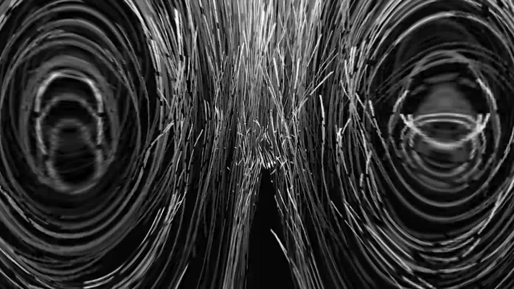
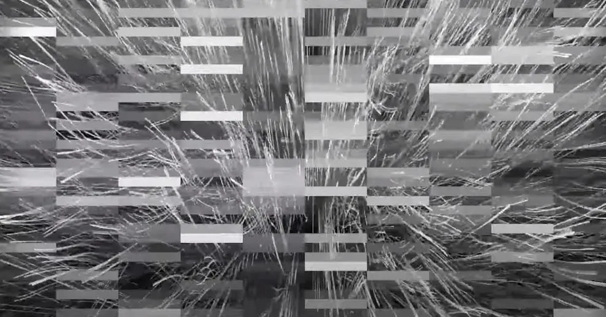

Circulation: Wave and Negentropy
Video, 1920 × 1080 px, 2019
- Shown at
- IBS Center for Quantum Nanoscience Art Competition, Ewha Womans University, Seoul, 2019.09–12
- Materials
- Single-channel video, sound
- In collaboration with
- Hong Gwang-min (sound)

This video work combines metaphysical imagery with sound to express the cyclical relationship between waves and negentropy. It explores the interplay between entropy and its counterforce, and what unfolds between waves and particles, between quantitative certainty and fluid waveforms.
Suggesting that quantum forms emerge in this in-between space, the work reflects on how these shifting states continuously reshape the world.
